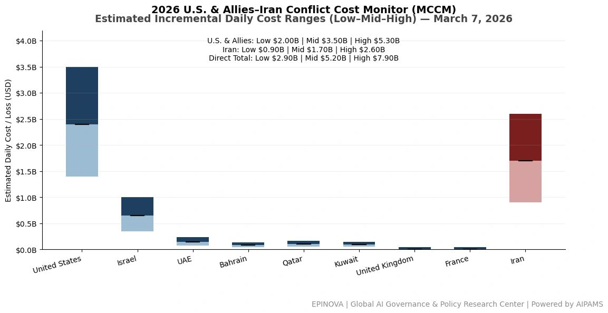
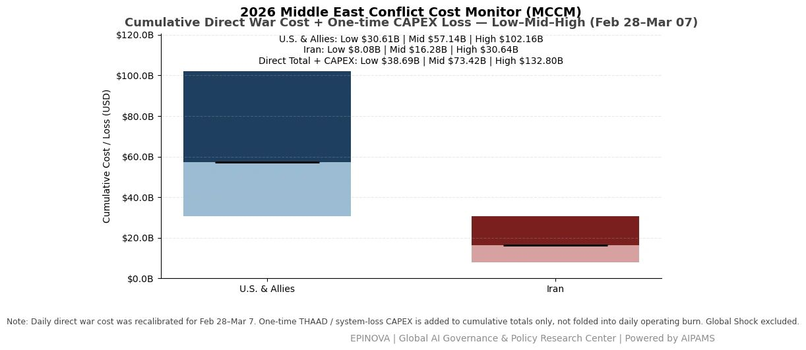
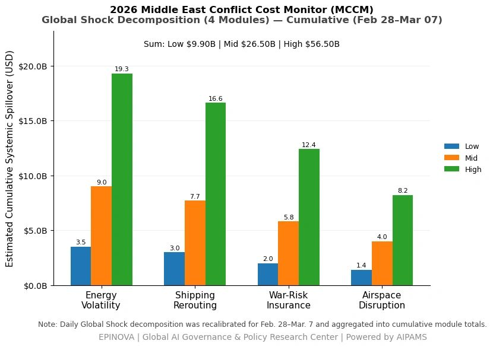

2026 U.S. & Allies–Iran Conflict Cost Monitor (MCCM): March 7
Powered by AIPAMS
Introduction
The 2026 Middle East Conflict Cost Monitor (MCCM) provides an event-driven, scenario-based assessment of daily conflict-related expenditures and losses across major state actors involved in the crisis. Using a structured low–mid–high estimation framework, the series aggregates publicly available operational indicators, force posture changes, strike intensity proxies, reported material damage, and infrastructure disruptions to produce comparable daily cost ranges.
The framework distinguishes between (1) direct military expenditures and asset losses, (2) infrastructure and energy-sector disruption costs, and (3) systemic market spillovers (“Global Shock”), which are reported separately from war-specific accounts.
MCCM is designed as a rolling monitoring instrument rather than a definitive accounting ledger. All estimates are expressed in current U.S. dollars (USD) and reflect bounded scenario approximations intended for comparative analysis and policy discussion. High-range estimates may incorporate upper-bound scenario adjustments where reported high-value asset losses remain under verification. Estimates are updated as verification improves and may be revised retroactively.

Note:
Ranges reflect scenario-bounded estimates. Low = minimum confirmed observable losses. Mid = most probable range based on publicly available reporting and operational cost parameters. High = upper-bound scenario including reported but not independently verified high-value asset losses. Figures exclude Global Shock (systemic market spillovers). All values are incremental (24-hour estimate).

Note:
Cumulative totals represent aggregated daily scenario ranges. High range includes scenario-based upper-bound adjustments (e.g., reported strategic asset losses). Figures exclude Global Shock. Values rounded; subject to revision as verification improves.

Note:
Global Shock represents cumulative systemic spillovers during the reporting period and is decomposed into four modules: Energy Volatility, Shipping Rerouting, War-Risk Insurance Premiums, and Airspace Disruption. These modules capture major economic and logistical externalities associated with regional conflict escalation. Global Shock is reported separately and is not included in direct military cost estimates.
Selected References:
Al Jazeera. (2026, March 6). Iran-Israel war live updates: Regional tensions escalate. https://www.aljazeera.com/ Accessed March 6, 2026.
Associated Press. (2026, March 6). Israel intensifies strikes on Iran-linked targets across the region. https://apnews.com/ Accessed March 6, 2026.
BBC News. (2026, March 6). Iran-Israel conflict: Regional fallout grows. https://www.bbc.com/news Accessed March 6, 2026.
Bloomberg. (2026, March 6). Oil volatility rises as Iran conflict threatens Strait of Hormuz shipping. https://www.bloomberg.com/ Accessed March 6, 2026.
Cankao Xiaoxi. (2026, March 5). Mei yi yi zhan shi jin ru di liu tian, zui xin dong tai [美以伊战事进入第六天，最新动态]. https://www.cankaoxiaoxi.com/ Accessed March 6, 2026.
Financial Times. (2026, March 6). Shipping insurers raise war-risk premiums as Gulf conflict widens. https://www.ft.com/ Accessed March 6, 2026.
Jimu Xinwen. (2026, March 2). Yilang: Meiguo zhui zhu Yilake Aierbile lingguan bei cuhui [伊朗：美国驻伊拉克埃尔比勒总领馆被摧毁]. https://www.ctdsb.net/ Accessed March 6, 2026.
International Air Transport Association. (2026). Airspace disruptions in the Gulf region. https://www.iata.org/ Accessed March 6, 2026.
International Energy Agency. (2026). Oil market volatility and Middle East risk update. https://www.iea.org/ Accessed March 6, 2026.
Lloyd’s List. (2026). War-risk insurance costs rise for vessels transiting the Gulf. https://lloydslist.com/ Accessed March 6, 2026.
MarineTraffic. (2026). Shipping movements and rerouting trends in the Persian Gulf. https://www.marinetraffic.com/ Accessed March 6, 2026.
Reuters. (2026, March 2). Amazon cloud unit flags issues in Bahrain, UAE data centers amid Iran strikes. https://www.reuters.com/world/middle-east/amazon-cloud-unit-flags-issues-bahrain-uae-data-centers-amid-iran-strikes-2026-03-02/ Accessed March 6, 2026.
Reuters. (2026, March 3). France sending aircraft carrier to Mediterranean, Macron says. https://www.reuters.com/world/france-sending-aircraft-carrier-mediterranean-macron-says-2026-03-03/ Accessed March 6, 2026.
Reuters. (2026, March 4). Sri Lanka rescues people aboard distressed Iranian ship after reported attack. https://www.reuters.com/world/asia-pacific/sri-lanka-rescues-30-people-board-distressed-iranian-ship-foreign-minister-says-2026-03-04/ Accessed March 6, 2026.
Reuters. (2026, March 6). Gulf carriers resume limited flights as missile fire fuels uncertainty. https://www.reuters.com/world/middle-east/gulf-carriers-resume-limited-flights-missile-fire-fuels-uncertainty-2026-03-06/ Accessed March 6, 2026.
Reuters. (2026, March 6). Iran’s Guards challenge Trump to have U.S. Navy escort oil tankers through Strait of Hormuz. https://www.reuters.com/world/middle-east/irans-guards-challenges-trump-have-us-navy-escort-oil-tankers-strait-hormuz-2026-03-06/ Accessed March 6, 2026.
Reuters. (2026, March 6). Israel’s Hezbollah attacks likely to continue beyond Iran war, source says. https://www.reuters.com/world/middle-east/israels-hezbollah-attacks-are-likely-continue-beyond-iran-war-source-says-2026-03-06/ Accessed March 6, 2026.
Reuters. (2026, March 6). South Korea, U.S. militaries discuss moving Patriot missiles to Iran war, Seoul says. https://www.reuters.com/world/asia-pacific/south-korea-us-militaries-discuss-moving-patriot-missiles-iran-war-seoul-says-2026-03-06/ Accessed March 6, 2026.
Reuters. (2026, March 6). Trump says there will be no deal with Iran except unconditional surrender. https://www.reuters.com/world/us/trump-says-there-will-be-no-deal-with-iran-except-unconditional-surrender-2026-03-06/ Accessed March 6, 2026.
U.S. Department of Defense. (2026). Press briefing on U.S. operations in the Middle East. https://www.defense.gov/ Accessed March 6, 2026.
Xinhua News Agency. (2026, March 6). Yilang yu Yiselie chongtu jixu shengji [伊朗与以色列冲突继续升级]. https://www.xinhuanet.com/ Accessed March 6, 2026.
Reuters. (2026, March 6). Iran war: See how tanker traffic collapsed in the Strait of Hormuz. https://www.reuters.com/world/middle-east/iran-war-see-how-tanker-traffic-collapsed-strait-hormuz-2026-03-06/
Reuters. (2026, March 5). Shipping insurers raise war-risk premiums as Middle East conflict intensifies. https://www.reuters.com/world/middle-east/shipping-insurers-raise-war-risk-premiums-middle-east-conflict-2026-03-05/
Reuters. (2026, March 4). Oil prices surge as Middle East conflict escalates and Hormuz shipping disrupted. https://www.reuters.com/markets/commodities/oil-prices-surge-middle-east-conflict-hormuz-2026-03-04/
Reuters. (2026, March 7). Kuwait declares force majeure at some oil facilities amid regional conflict. https://www.reuters.com/world/middle-east/kuwait-declares-force-majeure-oil-facilities-2026-03-07/
Reuters. (2026, March 2). Airlines cancel flights as Middle East airspace closes during Iran-Israel escalation. https://www.reuters.com/world/middle-east/airlines-cancel-flights-middle-east-airspace-2026-03-02/
Reuters. (2026, March 3). Global shipping reroutes as conflict threatens Strait of Hormuz transit. https://www.reuters.com/world/middle-east/global-shipping-reroutes-hormuz-conflict-2026-03-03/
Associated Press. (2026, March 5). U.S. launches additional strikes as Iran conflict expands across the Gulf. https://apnews.com/article/us-iran-war-middle-east-strikes-2026
Associated Press. (2026, March 7). Airlines and shipping companies struggle with disruptions across Gulf region. https://apnews.com/article/gulf-conflict-shipping-airlines-disruption-2026
Bloomberg. (2026, March 6). Oil jumps and tanker rates soar as Middle East war spreads. https://www.bloomberg.com/news/articles/2026-03-06/oil-jumps-and-tanker-rates-soar-middle-east-war
Bloomberg. (2026, March 4). War-risk insurance premiums surge for ships transiting the Gulf. https://www.bloomberg.com/news/articles/2026-03-04/war-risk-premiums-surge-ships-gulf
Financial Times. (2026, March 6). Middle East war disrupts global shipping routes and energy markets. https://www.ft.com/content/middle-east-war-shipping-energy-markets-2026
Financial Times. (2026, March 5). Airspace closures ripple across international aviation networks. https://www.ft.com/content/airspace-closures-aviation-middle-east-2026
International Maritime Organization. (2026, March 6). Maritime security advisory following attacks in the Strait of Hormuz. https://www.imo.org/en/MediaCentre/HotTopics/Pages/Strait-of-Hormuz-security.aspx
Lloyd’s List. (2026, March 5). War-risk premiums surge for ships entering the Persian Gulf. https://lloydslist.maritimeintelligence.informa.com/
Clarksons Research. (2026). Shipping market update: Impact of Middle East conflict on tanker and container markets. https://www.clarksons.net/
International Energy Agency. (2026). Oil market report: Supply risks amid Middle East conflict. https://www.iea.org/reports/oil-market-report
U.S. Department of Defense. (2026). Statements and briefings on U.S. operations in the Middle East. https://www.defense.gov/News/
U.S. Central Command. (2026). Operational updates on regional security and maritime activity. https://www.centcom.mil/Media/
White House. (2026). Statements and releases related to Operation Epic Fury and Middle East security developments. https://www.whitehouse.gov/
Al Jazeera. (2026, March 7). Iran claims new wave of strikes against Israeli and U.S. targets. https://www.aljazeera.com/news/2026/03/07/iran-new-wave-strikes
BBC News. (2026, March 6). Gulf conflict disrupts oil shipping and global markets. https://www.bbc.com/news/world-middle-east-2026
CNN. (2026, March 7). Trump warns Iran of further strikes as Middle East war escalates. https://www.cnn.com/2026/03/07/politics/trump-iran-warning
The Washington Post. (2026, March 7). U.S. Army cancels Fort Bragg exercise as Middle East tensions rise. https://www.washingtonpost.com/national-security/2026/03/07/us-army-exercise-cancelled-middle-east/
The Guardian. (2026, March 7). UK carrier HMS Prince of Wales prepares for potential Middle East deployment. https://www.theguardian.com/world/2026/mar/07/uk-carrier-prince-of-wales-middle-east-deployment
Share this post: